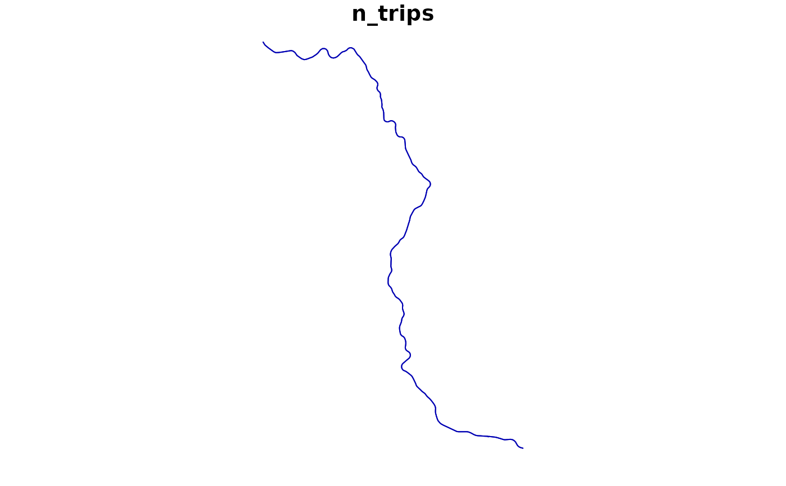

Returns the distinct geometries of the trips of each specified route_id
(its "variants", e.g. each direction and each short-turn service), with the
trip_id that identifies each of them and the number of trips that follow
them.
Arguments
- gtfs
A GTFS object, as created by
read_gtfs().- route_id
A character vector including the
route_ids to have their geometries generated. IfNULL(the default), the function generates geometries for everyroute_idin the GTFS.route_ids not listed intripsare ignored, with a warning.- method
A string, either
"shapes"(the default) or"euclidean", specifying how the geometry of each trip is generated. Please seeget_trip_geometry()for details. If the GTFS object doesn't have ashapestable, or if itstripstable doesn't have ashape_idcolumn,"euclidean"is used instead, with a warning.- crs
The CRS of the resulting object, either as an EPSG code or as an
crsobject. Defaults to 4326 (WGS 84).
Value
A LINESTRING sf with one row per route and distinct trip
geometry, with the columns route_id, trip_pattern (the first
trip_id, in alphabetical order, of the route's trips with that geometry,
which identifies it), n_trips (the number of trips of the route with
that geometry) and geometry. Rows are ordered by
route_id (with NA last) and, within each route, by decreasing
n_trips.
Details
The geometry of each trip is generated as in get_trip_geometry(), so it
goes from the trip's first to its last stop, either along its shape or as
straight lines between its stops, and the same limitations and warnings
apply. The trips of a route whose geometries are identical are then merged
into a single row. Trips that visit stops at different points of the same
shape thus result in different rows, even if their geometries overlap.
Only trips listed both in trips and in stop_times are considered, so
routes without any trip listed in stop_times are not included in the
output. When a trip_id is listed more than once in trips, only its first
entry is considered. With route_id = NULL, trips with a missing
route_id are grouped together, under an NA route_id. Trips without
any stop with coordinates (and, with method = "shapes", trips that can't
be located along a shape) get an empty geometry, as in
get_trip_geometry(), and these trips are counted in an empty-geometry row
of their route.
Examples
data_path <- system.file("extdata/spo_gtfs.zip", package = "gtfstools")
gtfs <- read_gtfs(data_path)
route_geometry <- get_route_geometry(gtfs)
head(route_geometry)
#> Simple feature collection with 6 features and 3 fields
#> Geometry type: LINESTRING
#> Dimension: XY
#> Bounding box: xmin: -46.64446 ymin: -23.65102 xmax: -46.56817 ymax: -23.43291
#> Geodetic CRS: WGS 84
#> route_id trip_pattern n_trips geometry
#> 1 2002-10 2002-10-0 1 LINESTRING (-46.62959 -23.5...
#> 2 2105-10 2105-10-0 1 LINESTRING (-46.58098 -23.4...
#> 3 2105-10 2105-10-1 1 LINESTRING (-46.61683 -23.5...
#> 4 2161-10 2161-10-0 1 LINESTRING (-46.56992 -23.4...
#> 5 2161-10 2161-10-1 1 LINESTRING (-46.63553 -23.5...
#> 6 4491-10 4491-10-0 1 LINESTRING (-46.62075 -23.6...
route_geometry <- get_route_geometry(gtfs, route_id = "CPTM L07")
route_geometry
#> Simple feature collection with 2 features and 3 fields
#> Geometry type: LINESTRING
#> Dimension: XY
#> Bounding box: xmin: -46.87192 ymin: -23.53514 xmax: -46.63545 ymax: -23.19565
#> Geodetic CRS: WGS 84
#> route_id trip_pattern n_trips geometry
#> 1 CPTM L07 CPTM L07-0 1 LINESTRING (-46.63545 -23.5...
#> 2 CPTM L07 CPTM L07-1 1 LINESTRING (-46.87192 -23.1...
plot(route_geometry["n_trips"])
